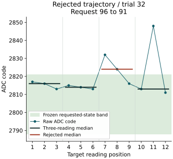

Question and rationale
The reference-order comparison recovered all 3888 readings but rejected three calibrations. States 3/4 overlapped in round 0 under both acquisition orders. Two local interleaved pairs also overlapped. In round 3, a state-0 excursion during a 5/0 outer control invalidated the interleaved calibration despite separated local 0/1 pairs.
Affected three-reading groups contained two elevated values: the median could therefore retain the excursion. The records do not determine whether the behavior occurs mainly after a request change or recurs during continued acquisition. This investigation extends held-request acquisition to the affected perturbed boundaries while controlling the preceding request.
The question is whether later three-reading groups provide better recognition than the first group on the same trajectory. Raw trajectories, including contrary observations, remain available independently of recognition. Request history, ADC behavior and electrical variation remain possible explanations; this run does not assume any of them is the cause.
Acquisition sequence
One boot contains six rounds of 648 readings: 216 nominal references, 216 interleaved mixed references and 216 held-out readings. The total remains 3888 readings. Quantities below use decimal notation.
- Acquire and freeze references. Retain the nominal and interleaved mixed-reference schedules, the gap-based calibration rule and guard 2. Each reference block uses twelve three-reading medians per state. Mixed references include the same inward outer-state controls and interior offsets −1, 0 and +1.
- Establish the preceding request. Record six triggered readings at a selected nominal request: 90, 93, 96, 99, 102 or 105. Preserve both medians and all six raw values; six readings are a controlled sequence, not proof of physical equilibrium.
- Acquire a boundary trajectory. Record twelve consecutive triggered readings at one unchanged requested code: 91, 92, 100 or 101, corresponding to states 0, 1, 3 and 4. Preserve four non-overlapping three-reading groups.
- Recognize without updating calibration. Both previously frozen calibrations evaluate all six medians in each trial: two at the preceding request and four at the target. No held-out value enters calibration.
| Rounds | Preceding requests | Boundary requests |
|---|---|---|
| 0, 2, 4 | 90, 93, 96 | 91, 92, 100, 101 |
| 1, 3, 5 | 99, 102, 105 | 91, 92, 100, 101 |
Each boundary request follows each nominal preceding request three times over the boot: 72 trajectories covering all 24 combinations. Within a round, the four boundary targets rotate by round modulo four; each target is tested after the three assigned preceding requests. The 864 target readings produce 288 target medians, with 72 medians at each of the four reading positions. Each target has eighteen trajectories.
Every reading uses the existing sample operation: select the requested value, apply the unchanged 1 ms pre-ADC settling interval, trigger, poll and record. Repeated requests use the same code but are reissued by that operation. There is zero additional acquisition wait. This is not a continuous analog waveform recording or a measurement with zero elapsed time between readings.
The held-out budget replaces omitted-trigger controls with longer target sequences. No omitted-trigger test is included in this boot. Prior retention/update results remain separate evidence; this investigation makes no new claim of independent analog conversion freshness.
Assessment fixed before acquisition
- Record integrity: all 3888 scheduled readings recovered, valid consecutive journal records, matching preparation identity, verified request/readback fields, ordered counters and recorded restoration outcomes. Missing or invalid data prevent qualification.
- Complete target recognition: all six mixed-reference calibrations accepted and all 288 target medians correct under that frozen rule. Report wrong, rejected and unavailable outcomes separately. This criterion concerns four perturbed targets, not general six-state reliability.
- Later-group improvement: compare readings 10–12 with readings 1–3 within each of the same 72 trajectories. The last group must have more correct decisions and fewer non-correct outcomes (wrong, rejected or unavailable), with no increase in wrong identities overall or for any target. Integrity must pass. Neither intermediate group is discarded or used to select a different comparison afterwards.
- Stratification: report all four groups separately for each target and preceding request, retaining three scheduled trajectories per combination and eighteen per target. Report each early-to-late outcome transition, raw trajectory and signed median change.
- Matched boundary separation: compare requests 91/92 and 100/101 at the same round, preceding request and reading group. Report higher-target median minus lower-target median minus 5 for all 144 comparisons, together with the measured time separation. These comparisons are descriptive and cannot alter calibration.
Rejected calibrations leave affected decisions unavailable in every scheduled denominator. Their raw trajectories remain measurable. Reference extrema, all repeated values and excursions are retained. No trimming, retrospective threshold adjustment or pooling away of a failing target is permitted.
Interpretation rules
Improvement in the declared last group would support a reading-position association under this sequence. It would not prove a settling mechanism, identify the cause of an excursion, or authorize silently discarding the first group in later work. A later regression or recurring late excursion would contradict a simple initial-response explanation.
If both early and late groups are correct, the run establishes no recognition benefit from extra observations. If calibration rejects, trajectories can still describe variation, but unavailable recognition cannot be counted as success. Stable matched gaps do not substitute for calibration acceptance or held-out correctness.
Matched boundary observations share the preceding request and round but occur in separate trajectories. They are not simultaneous or immediately consecutive endpoint pairs. Preceding-request groups remain associated with round parity; target rotation, reference age, thermal history and other environmental variation are not randomized or independently isolated. Report those limits with any observed association.
Execution and recording
The existing SEIGRASM acquisition operation adds selector 3 with 27 appended literal AArch64 instructions and one redirected dispatch branch, bringing it to 308 words. Reference collection uses selector-1 behavior. The new branch determines the eighteen-reading trial, preceding request, target and offset. Existing timed acquisition, gap calibration, recognition, restoration and SD recording execute the resulting sequence.
The executable path remains EEPROM entry → SEIGRASM entry and apparatus checks → direct component acquisition → native calibration and recognition → senary SD journal. PC packaging places the authored instruction words; no foreign target compiler or assembler produces them. The inherited loader and initial hardware state remain dependencies. Exclusion of other device activity, firmware replacement and Hyphos-defined Seigsit creation remain unproven.
Configuration schema 17 identifies the sequence. The image retains 64 words per reading, 76128 words in section 3, 32525 journal sectors for a complete return and 32704 reserved sectors. Both classifiers record 432 held-out decisions: 144 preceding-request and 288 target decisions. The PC assessment reconstructs the authored schedule, both frozen recognition records, all trajectories and the fixed comparisons. Recorded acquisition intervals and calibration ages use the reported counter frequency; their absolute accuracy is uncalibrated.
Execution checks cover all 3888 dispatches, all predecessor/target combinations, early excursions, native decision integrity, rejected-calibration denominators and partial-record recovery with restoration. Packaging checks compare declared trial and trigger counts with the executed schedule. Supplied-response execution validates those mechanisms, not physical recognition.
Preparation
Preparation A9D042001881 was installed on the SD before acquisition. The complete 64 MiB image was written and independently read back with matching SHA-256 9c876838eeac46e09b260f9ce409364a69b0f4b29c67a154c21d9a6e44ed9015.
All 295 software checks passed without skips and with unchanged sources during validation. The archive preserves 111 validated source files. Comparison with the preceding image confirms 33 unchanged instruction regions, unchanged boot configuration, electrical parameters and journal extent. The reference operation contains one changed dispatch instruction and 27 appended words; configuration, selector and preparation identity also change.
Before installation, all 32704 journal reservations were empty and bound to this preparation. The replaced SD contents matched the preserved preceding return. The returned observations are assessed below; the original protocol remains frozen in the preparation archive.
Run duration
The prescribed run is one uninterrupted 26-minute powered session under the established SD procedure. The previous image reached final-section entry after approximately 23 minutes 40 seconds. Reading count and journal extent are retained; the remaining time allows completion. Returned internal intervals are reported below.
Results
Mixed-reference recognition: 287/288 target medians correct, one rejected, no wrong identities and none unavailable. All six mixed-reference calibrations were accepted. All 3888 readings and 32525 valid consecutive journal sectors were recovered, with 179 empty reservations and no journal issues.
| Readings | Mixed correct | Mixed rejected | Nominal correct |
|---|---|---|---|
| 1–3 | 72/72 | 0 | 61/72 |
| 4–6 | 72/72 | 0 | 55/72 |
| 7–9 | 71/72 | 1 | 59/72 |
| 10–12 | 72/72 | 0 | 58/72 |
The first and fourth groups each recognized 72/72 medians. Every paired first-to-last outcome was correct to correct. The declared later-group improvement criterion was not met. The rejection in the third group also prevents complete target recognition; it remains in the 288-outcome denominator.
Nominal-reference recognition was 233/288 correct and 55 rejected, with no wrong identities or unavailable decisions. States 1, 3 and 4 each retained 72/72 correct target medians under mixed references; state 0 retained 71/72. Correct target margins ranged from 2 to 10 ADC codes. These are observations from this boot, not a general error rate.
Excursion during continued acquisition
The rejected trajectory was trial 32, round 2, using native zero-based identifiers. Six readings at preceding request 96 were followed by twelve at boundary request 91 for state 0. Its four medians were 2816, 2814, 2824 and 2813. The frozen state-0 interval was 2788–2821; the third median exceeded its upper bound by 3 codes and remained below the next state’s lower bound of 2826.
Readings 7–9 were 2832, 2824, 2816. Readings 10–12 were 2813, 2848, 2811: the isolated high eleventh value did not move that group’s median outside state 0. Thus a correct median can coexist with an excursion in a constituent reading. This run does not establish reliable single-reading identity.

The third group began approximately 214 ms after the first target group, using the reported counter frequency. The late rejection and the eleventh-reading excursion contradict an explanation confined to the first target observations. They do not identify the electrical or acquisition mechanism.
Target and preceding-request strata
Each target/predecessor combination has three trajectories. Entries give correct mixed-reference medians out of three; all remaining outcomes are rejections. No target stratum contains a wrong identity or unavailable result. All 72 first-to-last pairs remain correct to correct; their median-code change ranges from −4 to +4, with median zero.
State 0 / request 91: 71/72 correct
| Preceding request | 1–3 | 4–6 | 7–9 | 10–12 |
|---|---|---|---|---|
| 90 | 3/3 | 3/3 | 3/3 | 3/3 |
| 93 | 3/3 | 3/3 | 3/3 | 3/3 |
| 96 | 3/3 | 3/3 | 2/3 | 3/3 |
| 99 | 3/3 | 3/3 | 3/3 | 3/3 |
| 102 | 3/3 | 3/3 | 3/3 | 3/3 |
| 105 | 3/3 | 3/3 | 3/3 | 3/3 |
State 1 / request 92: 72/72 correct
| Preceding request | 1–3 | 4–6 | 7–9 | 10–12 |
|---|---|---|---|---|
| 90 | 3/3 | 3/3 | 3/3 | 3/3 |
| 93 | 3/3 | 3/3 | 3/3 | 3/3 |
| 96 | 3/3 | 3/3 | 3/3 | 3/3 |
| 99 | 3/3 | 3/3 | 3/3 | 3/3 |
| 102 | 3/3 | 3/3 | 3/3 | 3/3 |
| 105 | 3/3 | 3/3 | 3/3 | 3/3 |
State 3 / request 100: 72/72 correct
| Preceding request | 1–3 | 4–6 | 7–9 | 10–12 |
|---|---|---|---|---|
| 90 | 3/3 | 3/3 | 3/3 | 3/3 |
| 93 | 3/3 | 3/3 | 3/3 | 3/3 |
| 96 | 3/3 | 3/3 | 3/3 | 3/3 |
| 99 | 3/3 | 3/3 | 3/3 | 3/3 |
| 102 | 3/3 | 3/3 | 3/3 | 3/3 |
| 105 | 3/3 | 3/3 | 3/3 | 3/3 |
State 4 / request 101: 72/72 correct
| Preceding request | 1–3 | 4–6 | 7–9 | 10–12 |
|---|---|---|---|---|
| 90 | 3/3 | 3/3 | 3/3 | 3/3 |
| 93 | 3/3 | 3/3 | 3/3 | 3/3 |
| 96 | 3/3 | 3/3 | 3/3 | 3/3 |
| 99 | 3/3 | 3/3 | 3/3 | 3/3 |
| 102 | 3/3 | 3/3 | 3/3 | 3/3 |
| 105 | 3/3 | 3/3 | 3/3 | 3/3 |
The preceding-request observations were retained separately: 142/144 medians were correct and two were rejected by mixed-reference bands, with no wrong identities. Both exceptions were state-0 groups: raw [2783, 2796, 2783], median 2783, below the round-2 lower bound 2788; and [2783, 2796, 2789], median 2789, below the round-4 lower bound 2791. Both were recognized by the nominal-reference rule. Six preceding readings therefore do not establish an invariant settled condition.
Matched boundary separation
All 144 matched comparisons were complete and retained a positive guarded gap. Requests 91/92 ranged from 5 to 18 codes; requests 100/101 ranged from 12 to 18. Each comparison subtracts the declared five-code allowance from the difference between higher- and lower-request medians.
Matched endpoints occurred in separate trajectories, approximately 1.91–5.74 seconds apart. These are not simultaneous local pairs. Their separation does not override the rejected state-0 median or establish that the earlier state-3/4 reference overlap has been eliminated.
Acquisition and SD integrity
The two read-only 64 MiB captures matched, with SHA-256 0a3584111613c4e9d2b7139dd91d5639d18d2252fbb93e10f1024be335963784. Preparation identity, journal checksums and ordering, request/readback fields, native calibration and recognition records, and counter ordering passed assessment. Six restoration attempts completed; final restoration and pin release reported status zero.
Counter-derived acquisition duration was 138.126601 seconds; median timed call duration was 34.922722 milliseconds. Final-section entry occurred after 1418.578927 seconds, approximately 23 minutes 39 seconds. These intervals use the reported 54 MHz counter frequency and do not independently establish elapsed-time accuracy or conversion freshness. No procedure deviations were reported; external durations were not separately measured.
The returned boot filesystem is damaged. Its primary boot-sector geometry fails strict parsing and its two FAT copies differ. Ten sectors outside the native journal changed; the MBR and backup boot sector match the preparation. The writer, timing and cause of these changes are undetermined.
The PC reader uses the preserved preparation’s allocation metadata to compare the returned bytes at the known configuration and executable extents. Both match exactly. It does not repair the capture or treat the returned filesystem as valid. Journal decoding remains strict: corrupt checksums, missing final records and altered executable bytes are detected. All 22 return-analysis checks passed, including earlier-capture reproduction and deliberate corruption cases.
Implications and next question
This boot provides no observed recognition benefit from selecting the last target group instead of the first: both were 72/72 correct. A rejection appeared between them, and a later isolated excursion remained in the raw record. Increasing initial settling or discarding only early readings is therefore unsupported by this result.
The next electrical question is whether intermittent excursions recur during longer unchanged-request acquisition, particularly around states 0/1, while preserving states 3/4 as a comparison. Retain zero added wait, frozen independent references and every raw reading. Any additional estimator or rejection rule must be declared before a new acquisition and assessed against the existing rule on the same held-out data.
The SD metadata finding also requires a separate transport and mounting investigation before another physical run. The returned capture is preserved; a new verified image is required before reuse. The present evidence does not identify the source of the corruption. Independent analog conversion freshness, six-state reliability and Hyphos-defined Seigsit creation remain open.
Evidence
The preparation archive preserves the validated sources, executable image, fixed protocol and installation readback. The returned capture and its independently reproduced assessments are preserved separately from the fixed preparation.